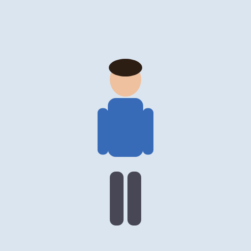
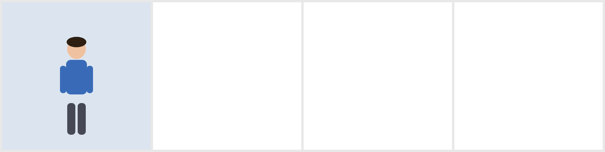
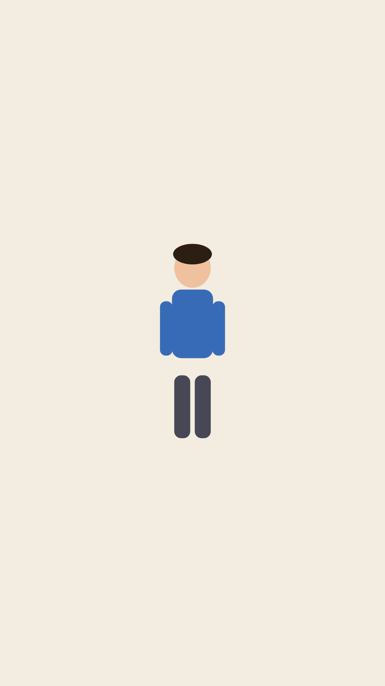
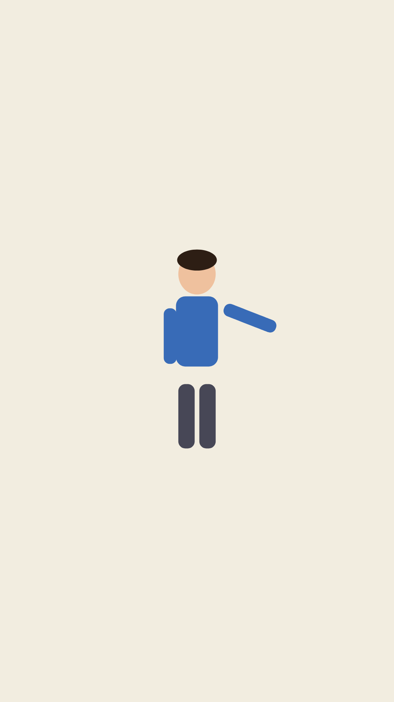
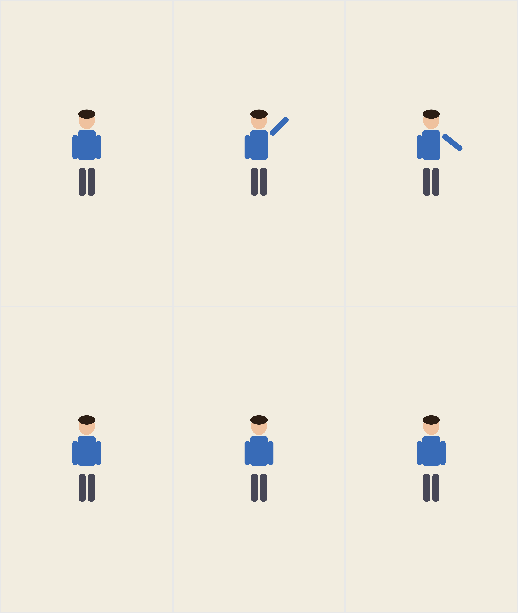
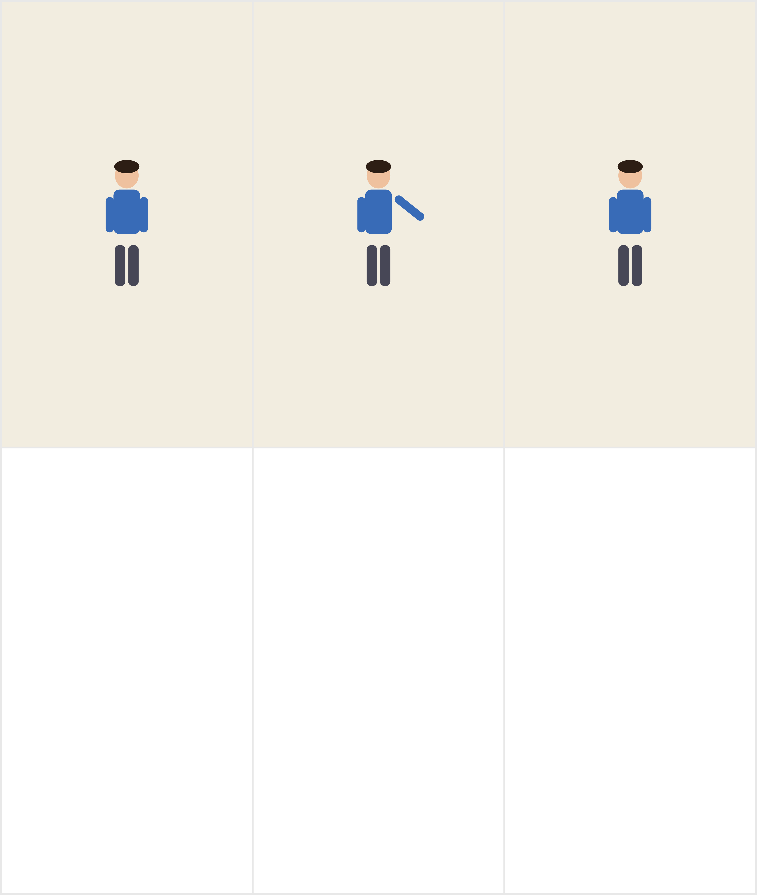

Lottie Pipeline Walkthrough
Text → Character Rig → Scene → Timeline → Player
The LLM writes a CharacterRig using the typed SDK API: parts with shape/fill/parent hierarchy,
named poses, and named clips (keyframed pose sequences).
parts = [
Part(name="torso", shapes=[Shape(
kind=ShapeKind.RECT, size=(72, 120),
position=(0, 60), corner_radius=16)],
fill=(0.22, 0.42, 0.72, 1.0),
position=(256, 200)),
Part(name="head", shapes=[Shape(
kind=ShapeKind.ELLIPSE, size=(64, 70),
position=(0, -38))],
fill=(0.94, 0.76, 0.62, 1.0),
parent="torso"),
# ... arms, legs, hair
]
poses = [
Pose(name="neutral"),
Pose(name="wave_right", joints={
"right_arm": {"rotation": -135.0}}),
Pose(name="point_left", joints={
"left_arm": {"rotation": 90.0},
"head": {"rotation": -8.0}}),
]
clips = [
Clip(name="wave", keyframes=[
(0, "neutral"), (10, "wave_right"), (24, "neutral")]),
Clip(name="point", keyframes=[
(0, "neutral"), (8, "point_left"), (20, "point_left")]),
]
rig = CharacterRig(
name="example_hero", width=512, height=512,
fps=30, background=(0.86, 0.90, 0.94, 1.0),
parts=parts, poses=poses, clips=clips)
compile_rig() deterministically converts the Python model to Lottie JSON.
Parts become shape layers with parent transforms; clips become keyframed rotation properties.
{
"v": "5.7.4",
"fr": 30,
"ip": 0,
"op": 24,
"w": 512,
"h": 512,
"nm": "example_hero",
"layers": [
{
"ty": 4, "nm": "right_arm",
"parent": 4,
"ks": {
"r": {
"a": 1,
"k": [
{"t": 0, "s": [0.0]},
{"t": 10, "s": [-135.0]},
{"t": 24, "s": [0.0]}
]
},
"p": {"a": 0, "k": [46, 20, 0]},
...
},
"shapes": [
{"ty": "gr", "nm": "right_arm",
"it": [
{"ty": "rc", "nm": "rect",
"p": {"a": 0, "k": [0, 48]},
"s": {"a": 0, "k": [22, 95]},
"r": {"a": 0, "k": 10}},
{"ty": "fl", "c": {"a": 0, "k": [0.22, 0.42, 0.72, 1]}},
{"ty": "tr", ...}
]}
]
}
]
}




goToAndStop() in headless Playwright.
A contact sheet (multiple keyframes tiled) is sent to a vision model with a scoring rubric. If score < 85, a targeted fix prompt is fed back to the LLM. Max 3 iterations.
Score this character rig contact sheet (0-100).
Character: "Maya"
Description: A 28-year-old mechanical engineer...
Criteria:
- Anatomical consistency across frames
- Part hierarchy looks correct (limbs attach to torso)
- Pose/clip animation is readable
- No missing/overlapping parts
- Color fills match description
Return JSON:
{
"consistency_score": <int>,
"issues": ["..."],
"suggestions": ["..."]
}
score ≥ 85 → Accepted, uploaded to S3
score < 85 → Fix prompt sent back to LLM
After 3 failed iterations → Fallback to example rig + error logged
The vision gate is optional (can be disabled). G0+G1 always run as minimum quality floor.
The LLM composes a scene by placing character instances at positions/scales and setting their clips.
compile_scene() flattens characters into shape layers (no nested precomps, which break lottie-web).
from baasha_pipeline.lottie_sdk import (
CharacterInstance, Scene, build_example_rig)
rig = build_example_rig()
hero = CharacterInstance(rig=rig).place(
540, 900, scale=160.0)
hero.play("wave")
scene = Scene(
width=1080, height=1920, fps=30,
duration=60,
background=(0.95, 0.93, 0.88, 1.0))
scene.place_character(hero)
"wave" runs for 60 frames (2 seconds @ 30fps).




Multiple scenes are sequenced into a single Lottie document. Each scene becomes a precomp asset with ip/op (in-point/out-point) windows controlling when it appears.
from baasha_pipeline.lottie_sdk import Timeline tl = Timeline(width=1080, height=1920, fps=30) tl.add(scene, at=0) # Scene 0: frames 0-59 tl.add(scene2, at=60) # Scene 1: frames 60-104 tl_doc = compile_timeline(tl)
Scene 1 (frames 60–104): Point clip, cool background



A static HTML player embeds lottie-web and loads the timeline JSON. Supports play/pause/restart/scrub.
Served at /lottie/player?url=....
<script src="lottie.min.js"></script>
<div id="c"></div>
<script>
var anim = lottie.loadAnimation({
container: document.getElementById('c'),
renderer: 'svg',
loop: true,
autoplay: true,
path: 'timeline.json' // or animationData
});
</script>
<!-- Controls -->
<button onclick="anim.play()">Play</button>
<button onclick="anim.pause()">Pause</button>
<input type="range" min="0" max="105"
oninput="anim.goToAndStop(this.value)" />
static/lottie_demo/ contains rig.json, scene.json,
timeline.json, plus rendered frames for each step.